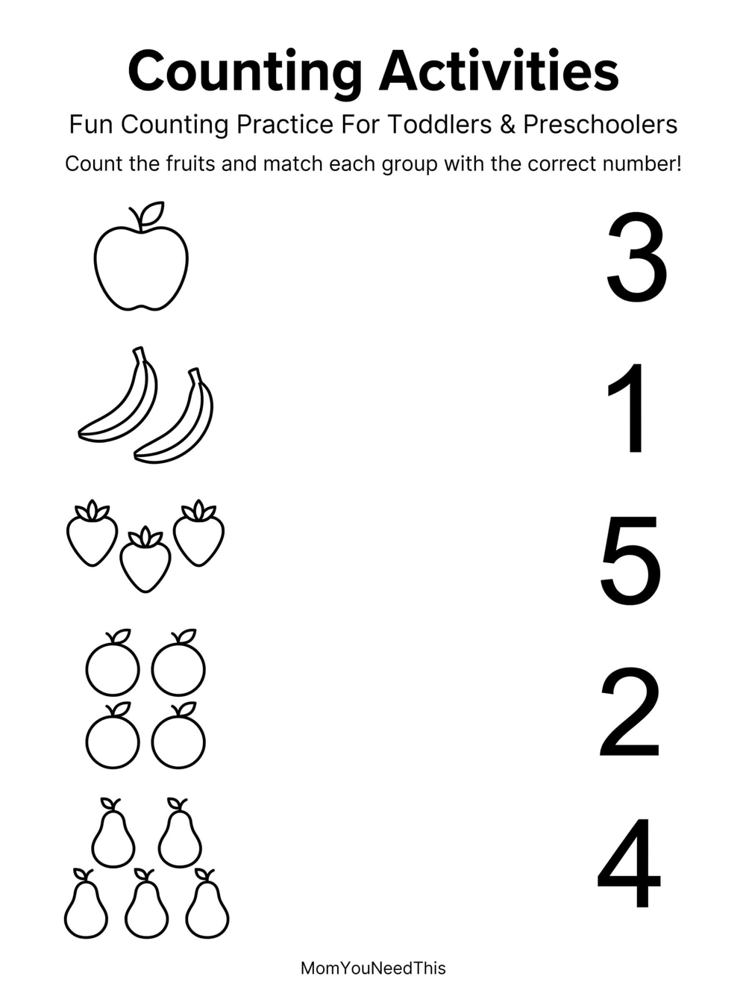

Counting Activities for Preschoolers Fun Counting Practice for Toddlers & Preschoolers
These counting activities for preschoolers help your child practice counting skills with free printable counting pages designed for toddlers and preschoolers. These fun resources support number recognition, counting confidence, and early math development through hands-on learning.
🔢 Counting Activity Worksheets
Why Counting Activities Matter
Counting practice helps children develop early math skills including number recognition, quantity awareness, and problem solving. These activities make learning numbers fun while building confidence before starting more advanced math concepts.

📚 Continue Learning
Explore more free preschool activities including alphabet practice, tracing worksheets, patterns, and coloring pages.
🎁 View All Learning Activities🖨️ How to Use This Activity Hub
Get started in minutes — everything here is free and made for busy parents.
- Pick an activity below. Browse the Counting Activity Pages collection and choose one that fits your child's mood today.
- Download it free. Every activity page includes a free printable download — no signup needed.
- Print and play together. Print at home, then learn side by side in short, fun sessions.
- Come back for more. New printables are added regularly, so there is always something fresh to try.
🔢 Counting Activities for Preschoolers
These counting activities for preschoolers turn numbers into play. Count the apples, the stars, the ducks — every page gives little hands something to point at and count. Our counting activities for preschoolers are free printables for ages 3 to 5.
The best counting activities for preschoolers are concrete and short. Count real objects first, then count pictures, then count on fingers. That concrete-to-picture-to-abstract path is how number sense actually develops.
Tip: weave counting activities for preschoolers into daily life — count steps, snacks, socks, and stairs. The pages reinforce what the real world already teaches.
See count-the-objects pages for more.
🧮 Preschool Counting Worksheets
These preschool counting worksheets help kids count to 5, then 10, then beyond. Each page pairs numbers with pictures to count, color, and circle. Our preschool counting worksheets are free to download and print.
Good preschool counting worksheets keep it visual. Kids count the pictures, write the number, and color their answer — three skills on one page. Start with 1 to 5, then build up as confidence grows.
Tip: use preschool counting worksheets as a morning warm-up — five minutes of counting before the day starts.
See How Many? pages for more.
❓ Counting Activity Pages FAQs
What activities are included in Counting Activity Pages?
This hub collects our free counting activity pages printables in one place. Pick any activity below to open its page, download the printable, and start learning.
Are these activities really free?
Yes — every printable on MomYouNeedThis is 100% free to download and print. No signup, no payment, just tap the download button.
How do I use these activities with my child?
Choose an activity, download and print it, and work through it together in short, playful sessions. Follow your child's lead and keep it fun.
What counting activities for preschoolers work best?
Counting real objects, then pictures, then fingers works best. Counting activities for preschoolers that mix all three — like the free printables on this page — build number sense that sticks.
Are preschool counting worksheets good for toddlers?
Preschool counting worksheets are designed for ages 3 to 5, but toddlers can join in by pointing and counting pictures with you. Let your child set the pace — if they are having fun, they are learning.
🔗 More Free Printables You’ll Love
Pair this printable with more free learning activities from the MomYouNeedThis library.
- 🔤 Alphabet Coloring PagesFree A to Z alphabet coloring printables for toddlers and preschoolers.
- 🎏 Free Color by Number PagesFree color by number pages printable for toddlers and preschoolers.
- 🎏 Free Counting Objects 1-5Free counting objects 1-5 printable for toddlers and preschoolers.
- 🎏 Free Counting Objects WorksheetsFree counting objects worksheets printable for toddlers and preschoolers.